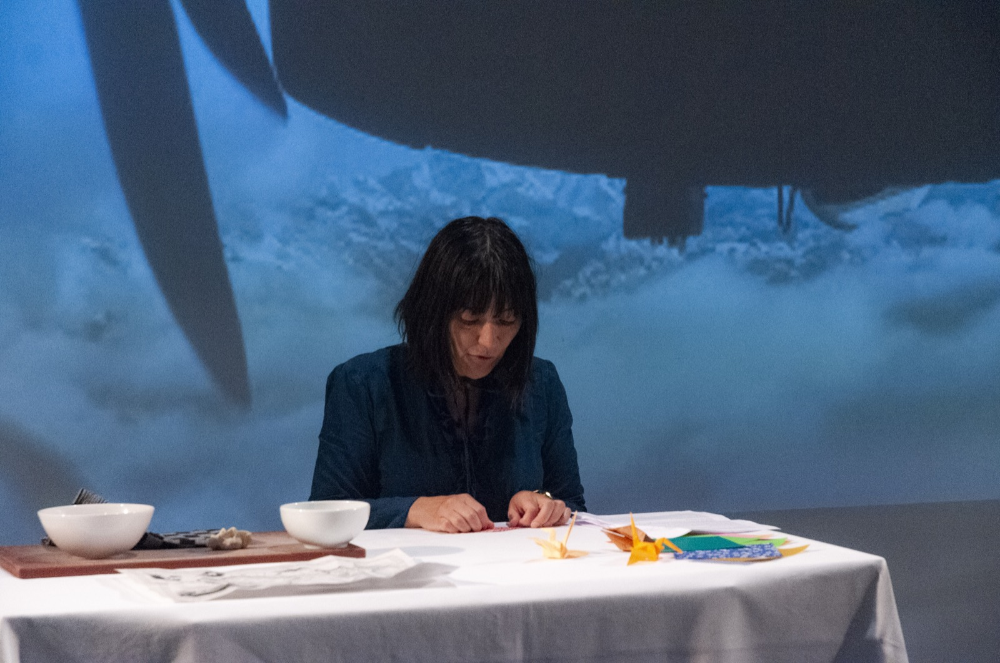
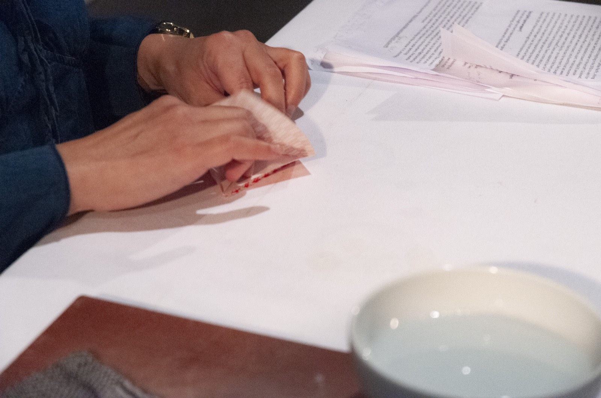
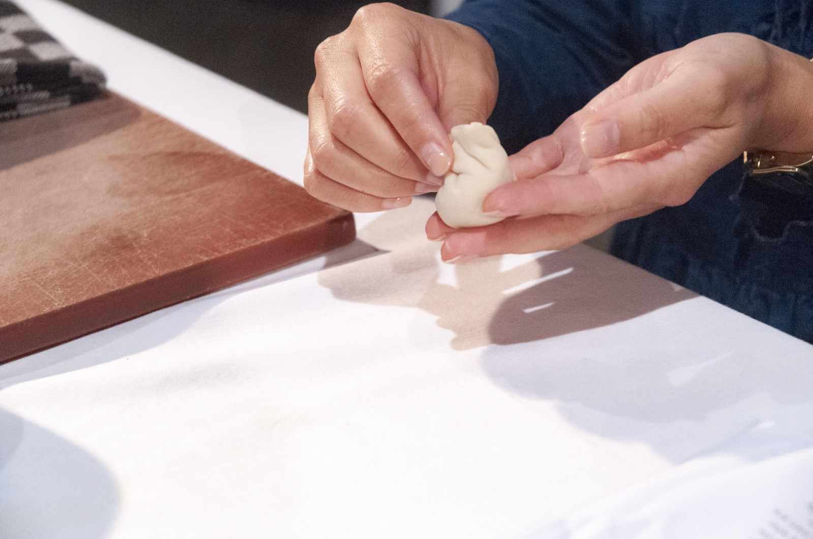

For the festival 'A Matter of (In)digestions', anthropologist Tina Harris developed ented a lecture-performance in which she weaves together her family history, traditional Asian recipes, and her recent research in air traffic in the Himalayas.
For this event, La Cocina also invited mixologist Sam Kingue Ebelle to conceive a signature cocktail that was given to teh audience as take-away souvenir.
This event was produced in collaboration with Mediamatic.
Tina Harris is Associate Professor in the Department of Anthropology at the University of Amsterdam and director of the AISSR Moving Matters research group. Tina’s main research interests include globalization in Asia and the movement of people and goods across borders, with a particular emphasis on exploring the theoretical connections between cultural anthropology, human geography, and political economy. Tina is also a drummer with the Amsterdam-based bad, We Want to Be the Sky.


